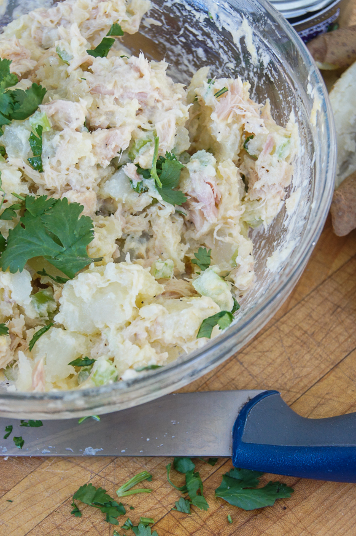

Return Home
Olivier Salad

Description
This dish consists of boiled potato, tuna and mayo
Ingredients
- Potatoes
- Eggs
- Mayonnaise
- Canned Tuna
Steps
- First, we peel and boil the potatoes.
- Secondly, we boil the eggs.
- Then, we will proceed to chop all potatoes and eggs into a bowl.
- Add the tuna to the bowl.
- And finally, add the mayo and mix everything.
- Be sure to mash the potatoes a bit (not too much) for different textures.